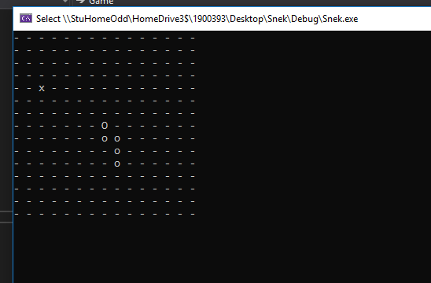
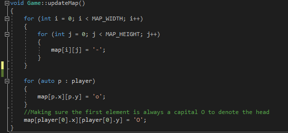

Jordan Walsh - Bourban.co.uk
Hello there! I'm Jordan Walsh; game programmer proficient in C++/C# with a wide range of experience from Gameplay programming in Unity to 2D engine creation with multimedia libraries like SFML. I also occasionally act as a designer, animator and tech support for fellow team members.
If you're stumbled across this site you're likely interested in some of my work:
- The Big Up, a 2D defense game created by a small group of postgrad students. As the only programmer I wrote the entire codebase. Also, due to the small size of the team I also contributed significantly to the game's design and created several of the player's animations.
- Untitled SFML Engine: My ongoing C++ SFML engine development, which can be found on my GitHub. The latest implementation features jumping physics, collisions, fully animated characters and character swappping for the player. In particular I'd like to highlight the implementation of the Command pattern, which encapsulates user input and allows for easy character swapping.
- Snek, a console-based Snake remake in C++, just made for fun. My other occasional short projects, most of which are open source, can be found on my GitHub -- so feel free to have a peek.  


If you'd like to contact me feel free to send me an email, tweet me at @BourbanMola or connect with me on LinkedIn.
---
Why Bourban? Is it 'cause I like biscuits and whiskey but can't spell? No, it's just because it rhymes with Jordan and my high school friends weren't very creative.